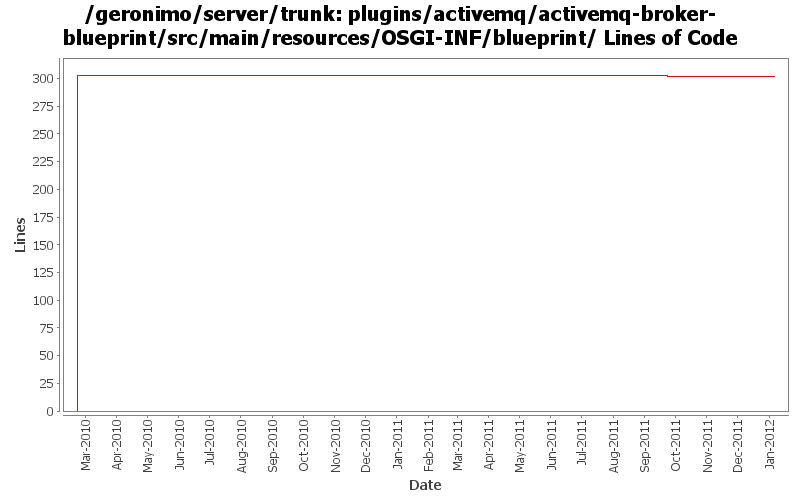

[root]/plugins/activemq/activemq-broker-blueprint/src/main/resources/OSGI-INF/blueprint

| Author | Changes | Lines of Code | Lines per Change |
|---|---|---|---|
| Totals | 7 (100.0%) | 321 (100.0%) | 45.8 |
| djencks | 2 (28.6%) | 305 (95.0%) | 152.5 |
| rwonly | 1 (14.3%) | 12 (3.7%) | 12.0 |
| genspring | 2 (28.6%) | 2 (0.6%) | 1.0 |
| xuhaihong | 1 (14.3%) | 1 (0.3%) | 1.0 |
| hanhongfang | 1 (14.3%) | 1 (0.3%) | 1.0 |
GERONIMO-6252 update activemq blueprint plan to recent aries jexl usage
2 lines of code changed in 1 file:
GERONIMO-5987 The ActiveMQ working directory and port are not referenced correctly - multiple instances not possible
12 lines of code changed in 1 file:
GERONIMO-6110 On 3.0 we don't register the 61616 port and the IP address for the server socket is not correct.
1 lines of code changed in 1 file:
Use same broker name "DefaultActiveMQBroker" of G21/G22 to keep the compatibility.
1 lines of code changed in 1 file:
GERONIMO-5677 Can not restart Geronimo3.0 in eclipse, patch from Yi Xiao.
1 lines of code changed in 1 file:
Use proper configuration for max memory usage
1 lines of code changed in 1 file:
GERONIMO-4931 Run activemq under (aries) blueprint using xbean-blueprint
303 lines of code changed in 1 file: